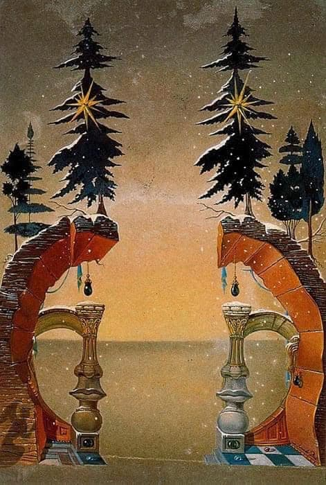
С 1958 по 1976 год клиенты компании Hoechst Iberica, основанной в Барселоне, получали рождественские открытки, автором которых был Сальвадор Дали. Художник нарисовал 19 картинок, которые хоть и мало напоминали классические праздничные открытки, были чрезвычайно популярны по всей Испании.
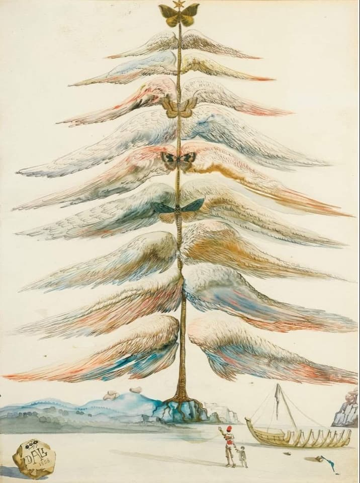
Более того, опыт переосмысления христианского Рождества был тогда для Дали не первым. Так, в 1946 году он сделал эскиз для рождественской обложки испанского Vogue. На картинке – классические элементы сюрреалистического стиля художника: бесплодный экспансивный пейзаж, двойные образы и глубокий символизм. Расположенные симметрично архитектурные элементы включают в себя женские черты лица, припорошены снегом и увенчаны елями – будто смотришь на типичную картину Дали, умело стилизованную под Новый год
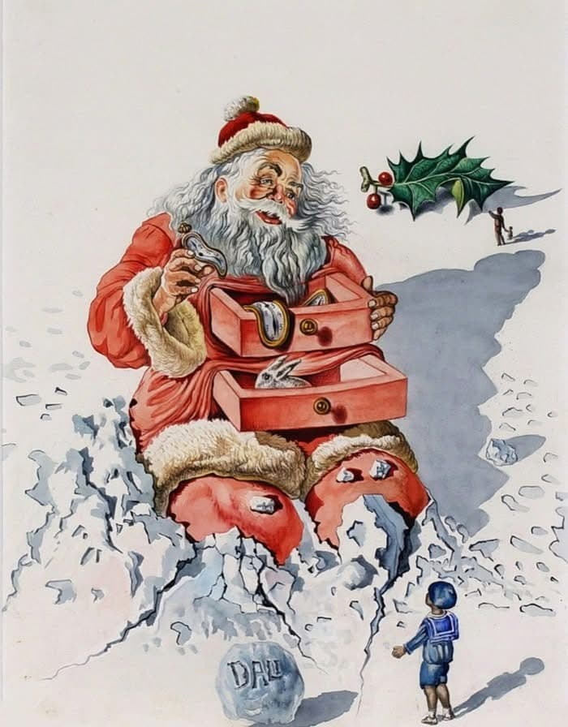
В 1958 году Дали нарисовал первую из 19 открыток из серии «Рождество» для фармацетологической компании Hoechst Iberica, которые вскоре стали получать врачи и фармацевты по всей Испании. Интересно, что в этих эскизах почти не встречаются традиционные для Испании символы Рождества, будь то католические сценки-сюжеты на тему рождения Иисуса или волхвы, которые пришли поклониться младенцу. Вместо этого художник активно использует рождественские символы Америки и Центральной Европы, например, ели, которые зачастую становятся аллегорическим символом главных событий уходящего года.
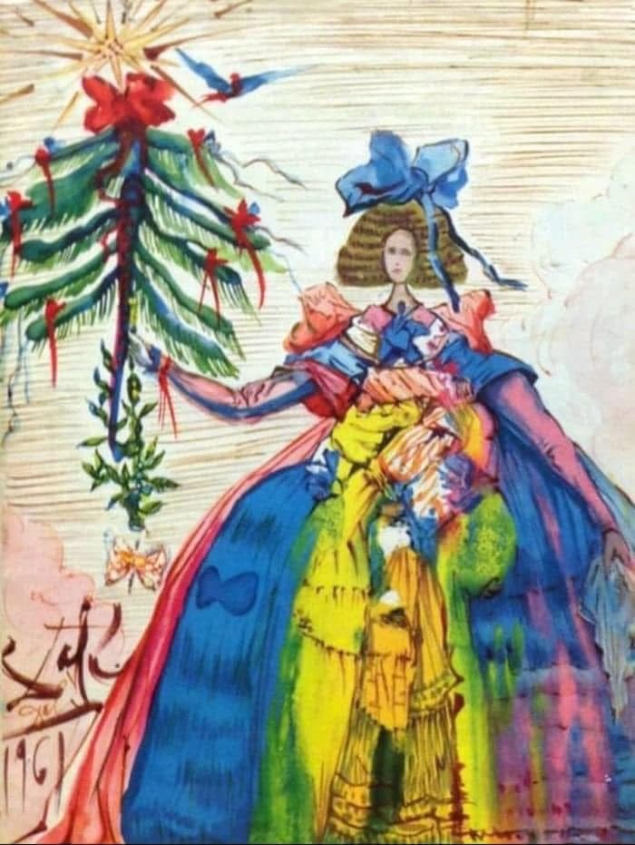
На открытках 1960 и 1961 годов рождественские елки выступают абсолютно испанским символом: они ссылаются на классические произведения испанской литературы и живописи. Так, на открытке, выпущенной в 1960 году, ствол и верхние ветви елки образуют фигуру Дон Кихота. Открытка 1961 года – отсылка к живописному полотну испанца Веласкеса «Менины» 1656 года.
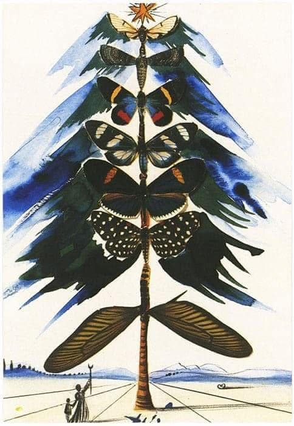
Большинство открыток Дали содержат небольшое рукописное приветствие, сочиненное сюрреалистом. Так, например, на открытке 1962 года, посвященной успехам в освоении космоса, художник написал: «Первое астронавтическое Рождество». Праздник здесь – далеко не самое важное, поэтому его атрибуту, вечнозеленой ели, уделено лишь немного места в верхнем углу открытки.
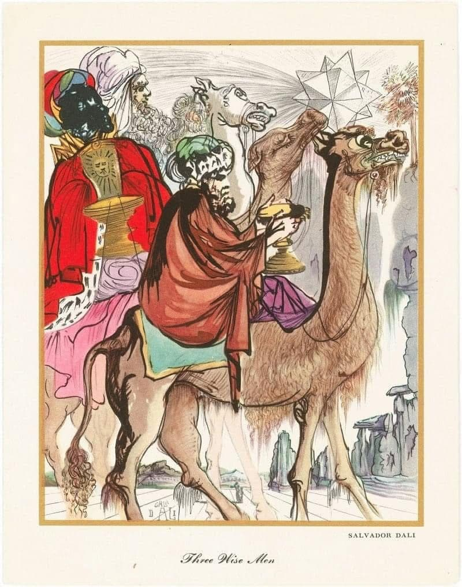
Несмотря на высокий интерес к открыткам сюрреалиста в Испании, в Америке они были приняты холодно: поздравительные карточки художника называли «черезчур авангардными».
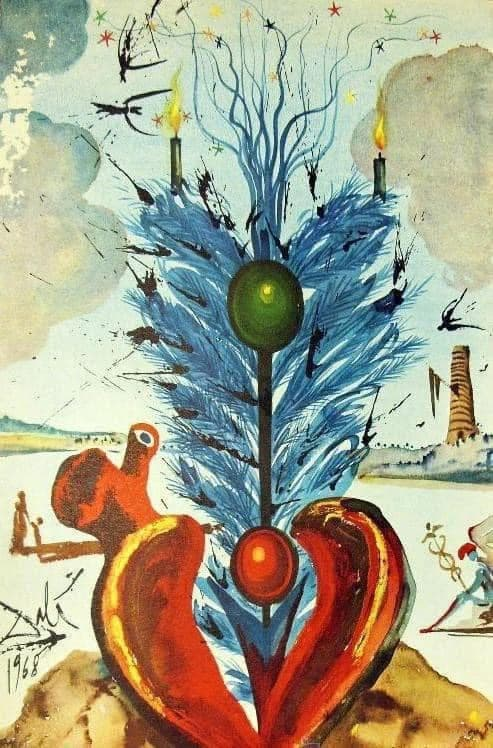
Каждый может нарисовать свои собственные, эксклюзивные открытки а напечатать их вам поможет наша типография Лазурь.
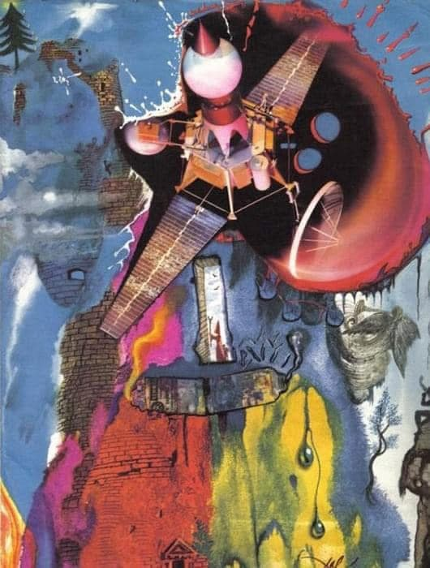
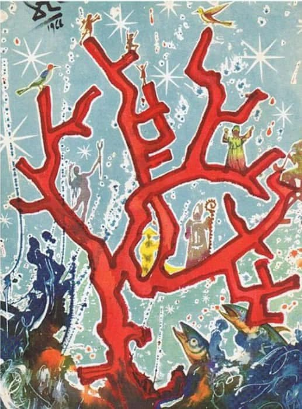
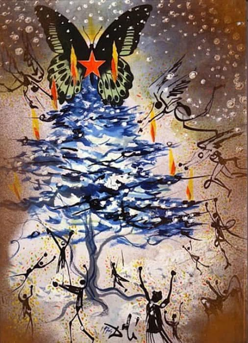
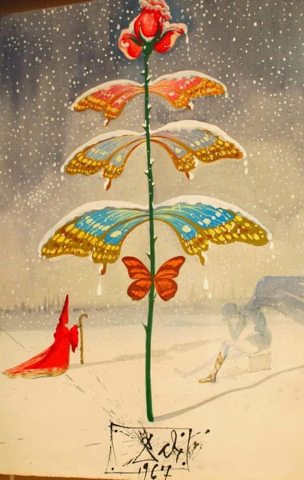
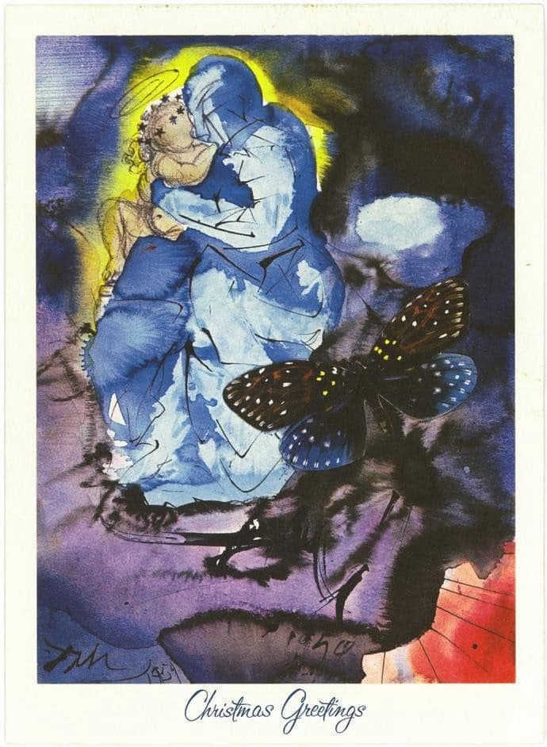